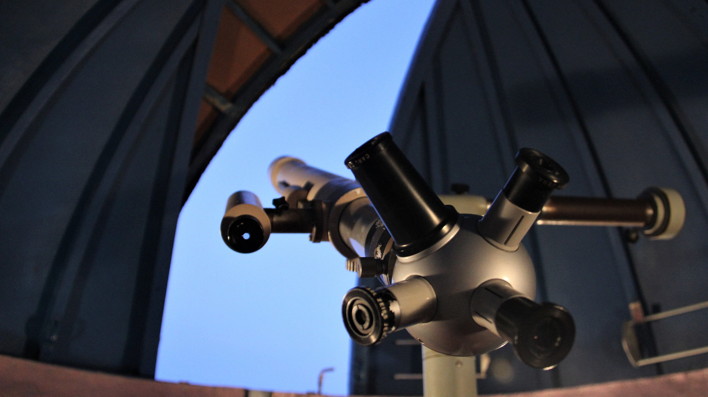

Data • 15/02/2023

A contemplação do cosmos sempre nos presenteia com fenômenos celestiais que cativam nossa imaginação e despertam a curiosidade científica. Hoje, exploraremos um desses espetáculos cósmicos fascinantes: a aurora boreal. Mas antes de nos aprofundarmos nesse fenômeno magnífico, é crucial compreender como a interação entre a Terra e o espaço sideral continua a surpreender a humanidade.
A aurora boreal, um dos eventos mais espetaculares do céu noturno no Ártico, é um exemplo claro da fascinante dança entre partículas solares e a atmosfera terrestre. Seu esplendor colorido e hipnotizante revela uma história científica intrigante que expande nossa compreensão do cosmos.
Similar às maravilhas da aurora boreal, o Telescópio Orbital Galáctico, em breve, nos proporcionará vislumbres inéditos do universo. Esse dispositivo revolucionário promete desvendar mistérios cósmicos, oferecendo uma visão sem precedentes das vastidões do espaço e das maravilhas que aguardam nossa descoberta.
Agora, voltando nosso olhar para a aurora boreal, entendemos que esse fenômeno celestial é resultado da interação entre partículas carregadas do sol e átomos em nossa atmosfera. O espetáculo de luzes vibrantes, dançando no horizonte, é um testemunho da incrível coreografia cósmica que ocorre a milhões de quilômetros de distância.
A aurora boreal, assim como o Telescópio Orbital Galáctico, nos lembra da incrível conexão entre o macro e o microcosmo, demonstrando como eventos no espaço distante impactam diretamente nossa experiência na Terra.
Cientificamente, a aurora boreal é um fenômeno resultante de tempestades solares. Quando partículas carregadas do sol colidem com o campo magnético terrestre, desencadeiam uma cascata de luzes deslumbrantes nas regiões polares. Essa interação magnética é uma dança cósmica que se desenrola diante de nossos olhos, uma dança que esperamos capturar de maneira única com o Telescópio Orbital Galáctico.
Durante os períodos mais ativos do ciclo solar, a aurora boreal se intensifica, proporcionando espetáculos ainda mais deslumbrantes. Essa variação na intensidade, assim como as prometidas revelações do Telescópio Orbital Galáctico, alimentam a nossa busca por compreender os mistérios do universo.
Ao viajar para as regiões árticas durante esses períodos, somos presenteados com a oportunidade única de testemunhar esse espetáculo cósmico em toda a sua glória, uma experiência que, sem dúvida, será complementada pelas imagens extraordinárias capturadas pelo telescópio orbital.
Em conclusão, assim como a aurora boreal nos leva a apreciar a beleza e a complexidade da interação entre o sol, a Terra e seu campo magnético, o Telescópio Orbital Galáctico promete nos proporcionar visões que expandirão ainda mais nossos horizontes cósmicos. Preparando-nos para esse próximo capítulo de exploração espacial, somos lembrados de que, ao olhar para as estrelas, abrimos as portas para descobertas infinitas e fascinantes.
Em um exemplo real, um dos registros mais notáveis de auroras boreais ocorreu em [inserir ano e local]. Durante esse evento, a intensidade das luzes do norte atingiu níveis espetaculares, iluminando o céu noturno e atraindo a atenção de cientistas e entusiastas da astronomia de todo o mundo. Estudos subsequentes desse fenômeno contribuíram significativamente para nossa compreensão da dinâmica atmosférica e das interações sol-terra.